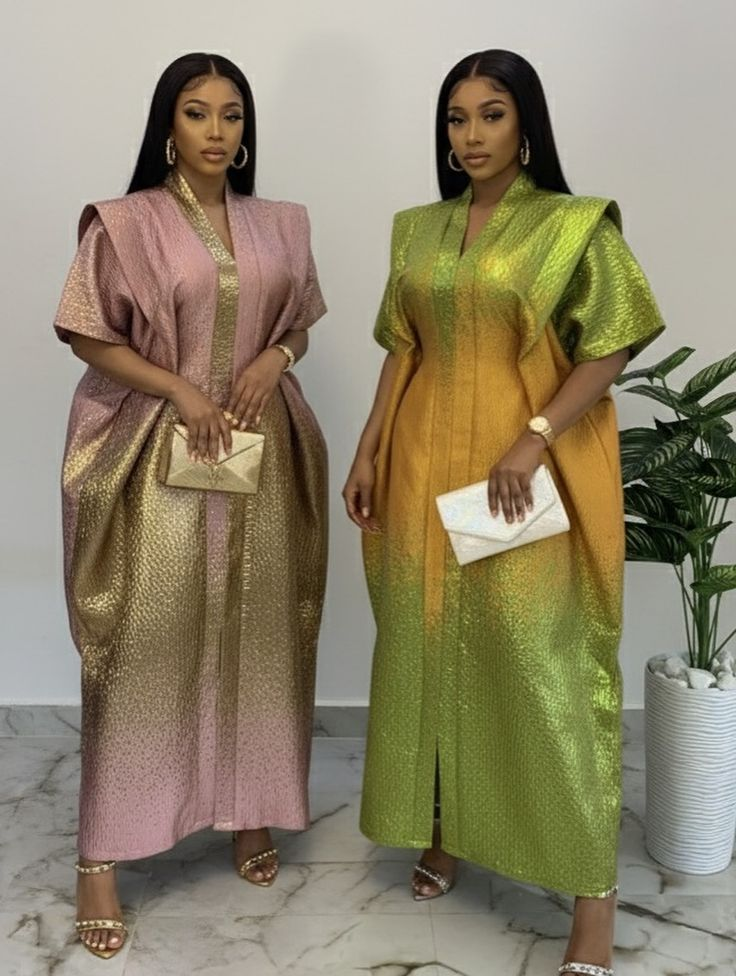
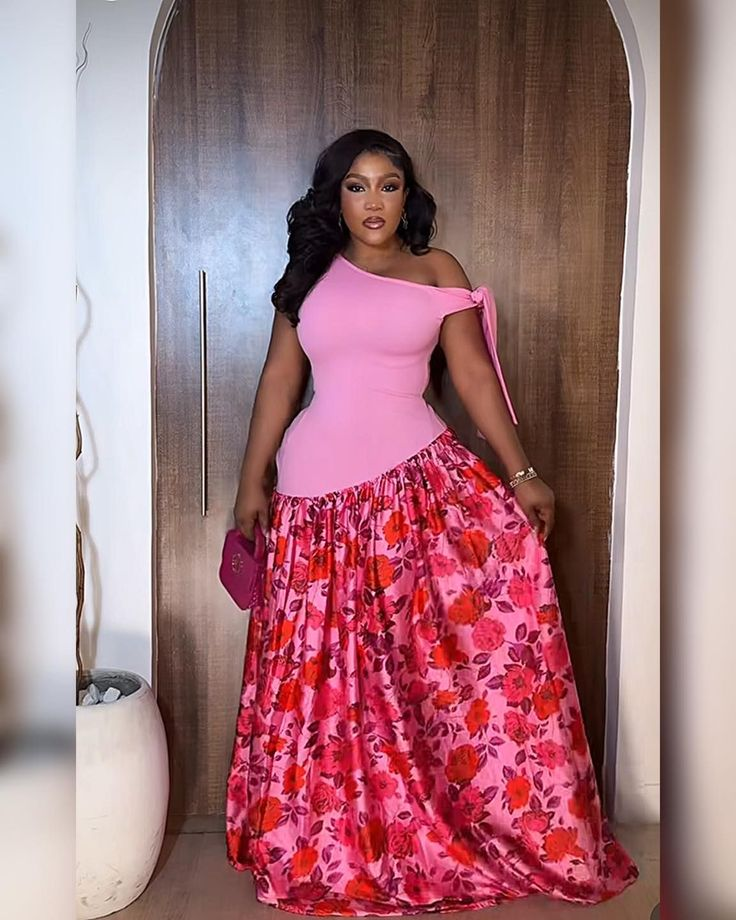
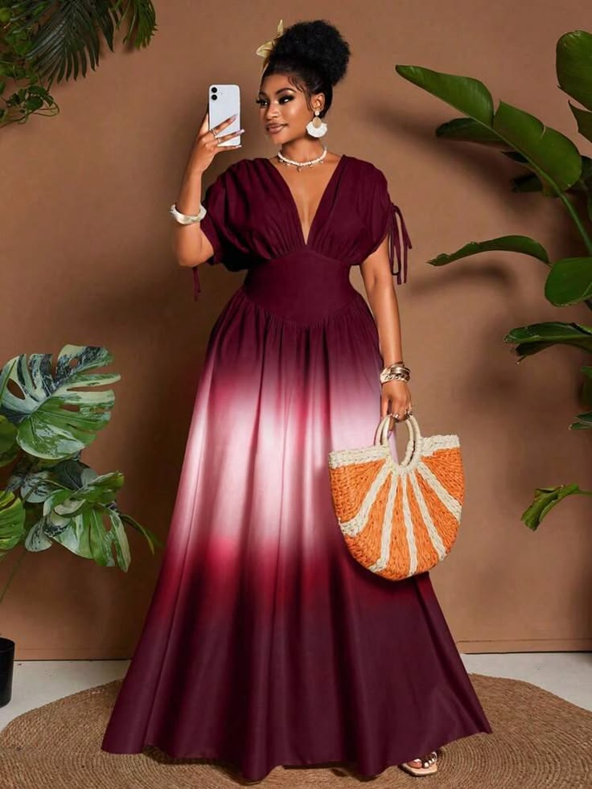
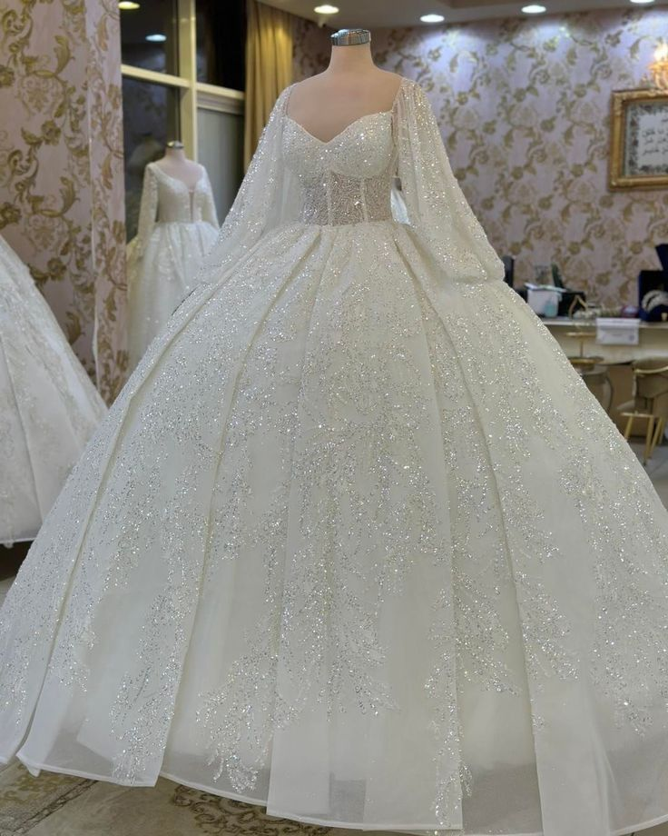
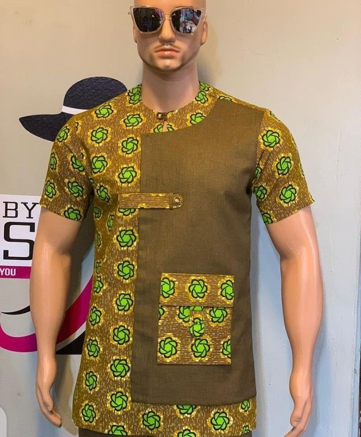
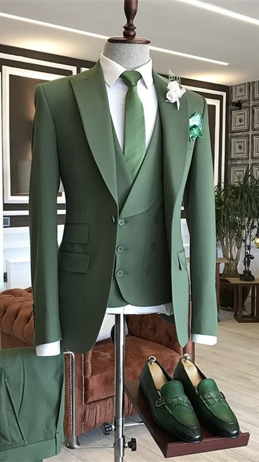

Personalized Designs
At Hafrak Fashion, we understand that every client has a unique style. Our expert seamstresses work with you to create custom dresses that truly reflect your individuality, ensuring that you stand out for any occasion.
Where culture meets modern elegance. Located in the heart of Takoradi, Ntankoful.
Book Your Consultation →
At Hafrak Fashion, custom tailoring is an art form. We create bespoke garments that celebrate your unique identity—whether it's a stunning Kente gown for a wedding, a sharp corporate suit, or a traditional Kaftan that honors heritage. Our master tailors work closely with you from concept to final fitting, ensuring every stitch reflects your vision.
What we offer: Men's and women's bespoke African wear, corporate suits, casual outfits, Kente/Ankara masterpieces, and traditional Kaftans. Choose from premium fabrics including silk, lace, cotton, and authentic African prints.

Sometimes your favorite garments just need a little adjustment to feel like new again. Our professional alteration services breathe fresh life into your wardrobe. Whether it's taking in a dress that's too loose, shortening hemlines, or adjusting waistbands, we ensure every piece fits you flawlessly.
Our alteration expertise: Resizing (taking in or letting out), hemming pants and skirts, sleeve adjustments, waist alterations, restyling old outfits, and custom modifications.

Unexpected rips, broken zippers, or loose buttons shouldn't keep you from wearing your favorite clothes. Our quick repair service is designed for urgent fixes with exceptional quality. We understand that life happens — and we're here to restore your garments promptly.
Common repairs we handle: Torn seams, zipper replacement, button reattachment, hole patching (invisible mending), hem repair, and strap adjustments.

Your wedding day deserves perfection. Our bridal alteration specialists understand the importance of a flawless fit for your dream gown. Whether you've purchased a dress that needs adjustments or are customizing a family heirloom, we handle delicate fabrics and intricate beadwork with the utmost care.
Bridal services: Bustle installation, hemming for different heel heights, taking in/letting out bodice, strap adjustments, adding sleeves, and customizing necklines. We work with lace, satin, tulle, and beaded fabrics.
Imagine walking down the aisle in a gown designed exclusively for you. Our wedding dress design service brings your dream dress to life—from initial sketches to the final stitch. We blend traditional African elegance with contemporary bridal trends, incorporating Kente, lace, beads, or any fabric you desire.
Design process: Inspiration consultation → custom sketches → fabric selection → toile fitting → final couture gown. Whether you desire a ball gown, mermaid silhouette, A-line, or modern minimalist style, we create a dress that reflects your personality.
At Hafrak Fashion, we believe that every dress tells a story. Founded in the heart of Takoradi, Ntankoful, Ghana, our mission is to craft bespoke dresses that not only fit impeccably but also resonate with your individual style. We specialize in personalized fittings and expert alterations, ensuring that each piece complements your unique silhouette. Whether you're preparing for a memorable event or looking to refresh your wardrobe, our skilled artisans are here to provide tailored solutions that bring your vision to life. Feel confident and comfortable in every stitch with Hafrak Fashion.






Vibrant creativity, Authentic Craftsmanship, and Passion for African textiles.
At Hafrak Fashion, we understand that every client has a unique style. Our expert seamstresses work with you to create custom dresses that truly reflect your individuality, ensuring that you stand out for any occasion.
We offer professional tailoring and alterations services to guarantee that every garment fits you perfectly. Whether you have a vision for a new dress or need adjustments on your favorite outfit, our skilled team is here.

Our commitment to quality craftsmanship ensures that every dress is made with precision and care. We use only the finest fabrics and techniques to create durable, beautiful garments you’ll cherish for years to.

Being based in Fijai, we pride ourselves on our local roots and understand the tastes and preferences of our community. Our personalized approach means you receive exceptional service tailored to your needs.
"Hafrak turned my vision into a masterpiece! The fit was perfect."
"Stunning African designs and exceptional tailoring. Highly recommended in Takoradi!"
"Professional, timely, and very creative. My wedding dress was everything!"
We offer a wide variety of custom-made dresses tailored to your needs:
Every garment is made to your exact measurements and style preferences. Book a free consultation to bring your vision to life.
Our fitting process is thorough and designed for a flawless result:
For complex garments like wedding dresses, we schedule 2-3 fittings to guarantee perfection. We never rush the process – your comfort and satisfaction come first.
Yes, absolutely! We offer professional alteration services for garments you already own:
Bring any garment to our Ntankoful studio for a free assessment and quote. Most alterations are completed within 3-7 days.
Custom tailoring: 3 to 5 weeks depending on design complexity and fabric availability.
Alterations & repairs: 3 to 7 days (small fixes can be done in 24-48 hours).
Rush orders: Need your outfit urgently? Contact us directly – we offer expedited services for an additional fee. We always communicate clear timelines upfront so you can plan with confidence.
We are located at Ntankoful, Takoradi – Western Region, Ghana.
To book an appointment:
Walk-ins are welcome, but we strongly recommend scheduling an appointment to guarantee dedicated time with our master tailors. Book today and let's create something extraordinary together.
Fill out the form below — we'll help bring your vision to life.